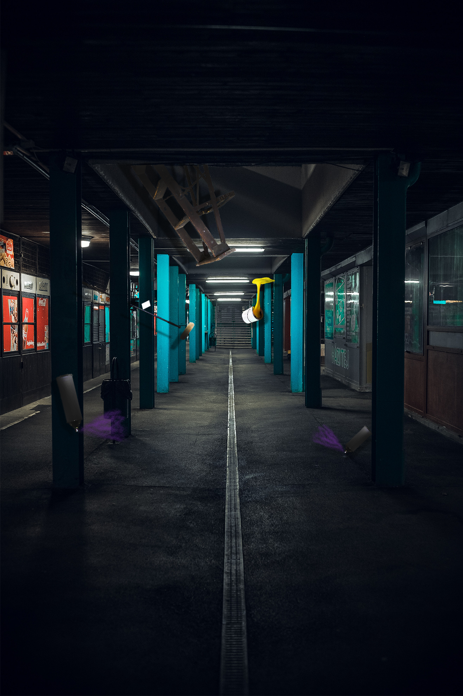
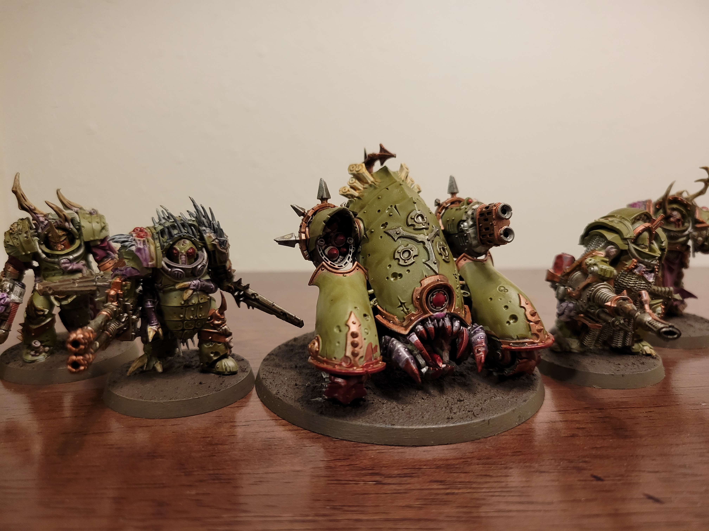
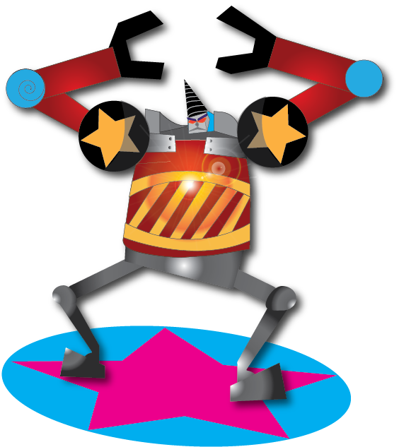
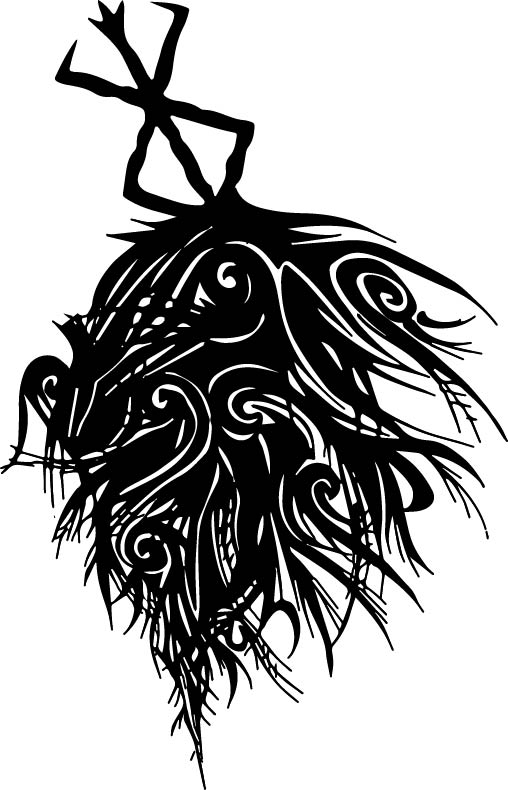

I'm Gavin Nowlin, im a student at Seminole State College , Graphic Designer.
I work at Blue Springs Brewing and work a a cellarman, and do small personal projects on the side like 3d modeling, painting models ,and photoshop.
I'm pursing an assosiates degree in game design i hope to one day work with a good game development team to bring entertainment and deep storytelling to thousands

This was a project design to show floating items shadows and perspective

Warhammer 40,000 models ive painted

This is robot design i did for an illustrator project

This is a tatoo design i did in illustrator.